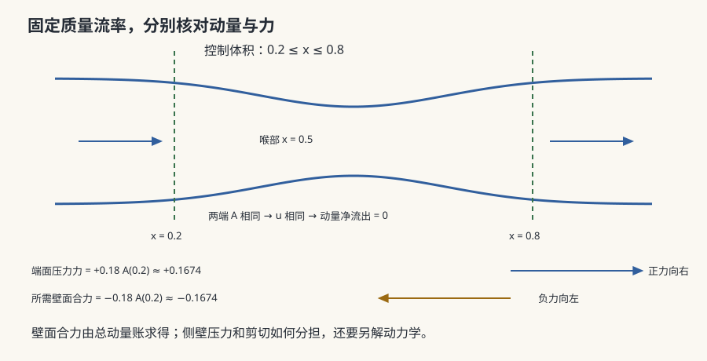

流体 I · 连续介质与 Navier–Stokes
对标：Landau & Lifshitz《流体力学》§1–2 / Batchelor ch.1–3 / Kundu ch.4 ｜ 前置：mech-01（守恒律）、mp-01（矢量分析） 从"一堆分子"跳到"一片连续的场"——这一步换来了偏微分方程的全部威力，也埋下了物理学最著名的未解问题（fl-03）。Navier–Stokes 是本站少数方程完全已知、解却至今不懂的对象：它的光滑性问题是千禧年七问之一。

1. 连续介质假设：什么时候可以忘掉分子
判据是 Knudsen 数 \(\mathrm{Kn} = \ell_{\text{mfp}}/L\)（平均自由程 / 特征尺度）。\(\mathrm{Kn}\ll1\) 时，任一"流体微元"内已有海量分子，涨落被平均掉（sm-02 的大数定律），可定义处处可微的 \(\rho(\mathbf x,t),\ \mathbf u(\mathbf x,t),\ p(\mathbf x,t)\)。
失效边界【诚实标注】：稀薄气体（高空、真空系统）、微纳流动（MEMS）、激波内部（厚度仅几个自由程）——需回到 Boltzmann 方程或 DSMC。本页全部建立在 \(\mathrm{Kn}\ll1\) 之上。
物质导数：跟着流体微元走的时间变化率
非线性就藏在 \((\mathbf u\cdot\nabla)\mathbf u\) 这一项里——湍流、激波、不稳定性全部源于它（fl-03、fl-04）。
2. 三条守恒律
质量（连续性）：\(\partial_t\rho + \nabla\cdot(\rho\mathbf u)=0\)；不可压时退化为 \(\nabla\cdot\mathbf u = 0\)。
动量（Cauchy）：\(\rho\dfrac{D\mathbf u}{Dt} = \nabla\cdot\boldsymbol\sigma + \rho\mathbf g\)。
本构关系【牛顿流体假设】：应力线性正比于应变率
代入即得 Navier–Stokes 方程（不可压）：
非牛顿流体【引用】：血液、聚合物熔体、泥浆——剪切变稀/变稠、粘弹性（Weissenberg 爬杆效应）。工业上极重要，物理上是另一门课。
3. 无量纲化：雷诺数的诞生
取特征尺度 \(L,U\) 无量纲化，N–S 只剩一个参数：
这是流体力学最重要的数。\(\mathrm{Re}\ll1\) 粘性主导（Stokes 流，fl-02）；\(\mathrm{Re}\gg1\) 惯性主导（边界层 + 湍流）。
动力相似：\(\mathrm{Re}\) 相同则流场无量纲解相同——这就是风洞实验的理论依据（缩尺模型 + 提高流速或换介质）。其他重要无量纲数：Mach（可压缩性）、Froude（重力波）、Prandtl（热扩散比，fl-04）、Rayleigh（对流，fl-04）。
4. 理想流体极限与涡量
\(\mu\to0\) 给 Euler 方程。沿流线积分得 Bernoulli：\(\tfrac12 u^2 + p/\rho + gz = \text{const}\)。
涡量 \(\boldsymbol\omega = \nabla\times\mathbf u\) 满足（不可压、无粘）
Kelvin 环量定理【推导】：理想正压流体中，随流体运动的闭合回路环量守恒 → 涡不能无中生有。二维时右端消失，涡量随流体守恒。
d'Alembert 佯谬：理想流体中定常绕流的阻力为零——与经验尖锐矛盾。解决它需要粘性，且粘性的作用不会随 \(\mu\to0\) 而消失（边界层，fl-02）。这是"奇异摄动"最著名的物理实例：\(\mu\) 乘在最高阶导数上，\(\mu\to0\) 不是正则极限。
5. 练习与要点
例 1（Re 的手感） 水中 \(L=1\) m、\(U=1\) m/s：\(\mathrm{Re}\sim10^6\)（湍流）；细菌 \(L=1\ \mu\)m、\(U=10\ \mu\)m/s：\(\mathrm{Re}\sim10^{-5}\)——细菌生活在粘性完全主导的世界里，惯性对它毫无意义（fl-02 扇贝定理）。
例 2（涡量守恒的日常） 拔掉浴缸塞子形成漩涡：初始微小涡量被向心收缩放大（\((\boldsymbol\omega\cdot\nabla)\mathbf u\) 的涡管拉伸项）——与花样滑冰收臂加速是同一个角动量守恒。
例 3（为什么 N–S 难） 非线性项使能量在尺度间传递，且三维涡管拉伸可能使涡量无界增长。三维光滑解是否永远存在，至今未知（千禧年问题）——这是本站唯一一个"方程写在这里、人类却不会解"的对象。\(\blacksquare\)
下一页：粘性到底在哪里起作用？答案是"只在薄薄一层里"——但正是这一层决定了阻力、失速与几乎所有工程流动。